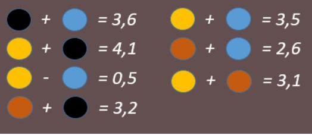
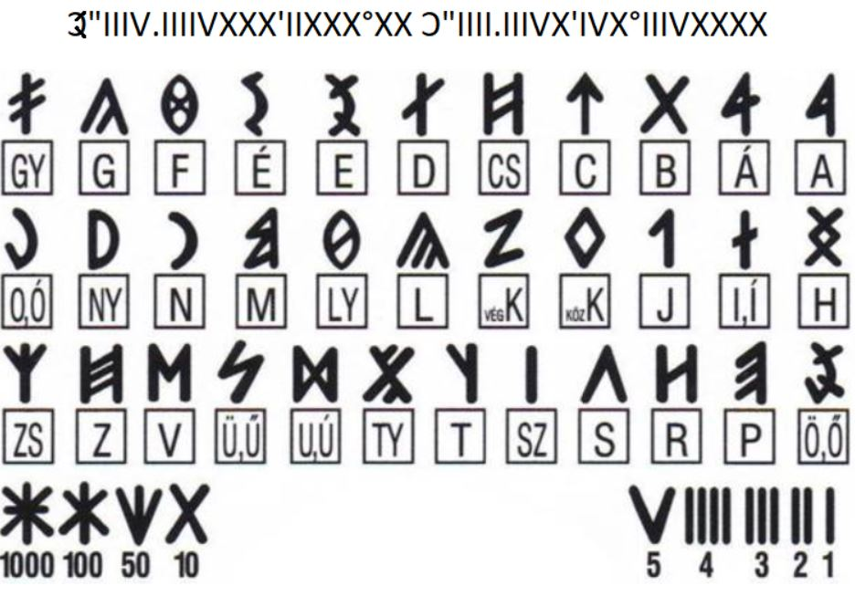

1241-et írunk, a tatár seregek megérkeztek Magyarországra. IV. Béla
magyar király úgy dönt, hogy Muhinál próbálja megállítani őket, ám a
csata rosszul alakul, a királynak menekülnie kell egy előre
megtervezett útvonalon! Az útvonal minden állomásán élelem és egy
friss ló várja, hogy minél gyorsabban haladhasson. Helyzetét
nehezíti, hogy az útvonalat megtervező hadvezére elesett a csatában,
de nincs minden veszve, mert hagyott maga után jeleket, amiket
helyesen értelmezve segíthetsz a királynak, hogy merre kell mennie!
Tudnivalók a játékról:
- Összesen 6 feldatot kell megoldani, hogy a király megmeneküljön.
- Ha elakadnátok, minden feladathoz tartozik segítség, amit a lap alján találtok.
A csata eldőlt, a tatárok bekerítették a magyarok szekértáborát. A tatár csapatok elhelyezkedését figyelembe véve határozd meg a három legígéretesebb kitörési pontot, a király majd eldönti, hogy melyiket választja!
Ide írd a három legígéretesebb kitörési pontot szóközzel elválasztva!
A király és kísérete sikeresen kitört a szekértáborból!
Egyelőre nem sikerült kitörni a szekértáborból!

Segítség 1
Először a kék egységek értékét számold ki a sárga-kék és a sárga+kék képletekből.
Segítség 2
Sárga-kék=0,5, vagyis a sárga egységek 0,5-el nagyobbak, mint a kékek. Sárga+kék=3,5 -> 3,5-0,5=3 -> 3/2=1,5. A kék egységek értéke tehát 1,5.
Segítség 3
Számold össze a szekértábor egyes elemeinél található tatár egységek értékét.
A királynak sikerült a Bükkig eljutni, de nem nyugodhat meg, a tatárok a nyomában vannnak. Friss lóra lenne szüksége, de senki sem tudja, hogy pontosan hol van a váltópont!

Ide írd a következő megállót, figyelj a kis- és nagybetűkre!
Irány Vadna (vagy valami más)!
Egyelőre nem sikerült megfejteni a következő állomást!
Segítség 1
A kódot székely-magyar rovásírással írták.
Segítség 2
A rovásírást jobbról balra kell olvasni. IIIXX = 23, IVXXXX = 46
Segítség 3
A helyes kód: 48°16'18.4"N 20°32'39.8"E Keress rá a Google-ban!